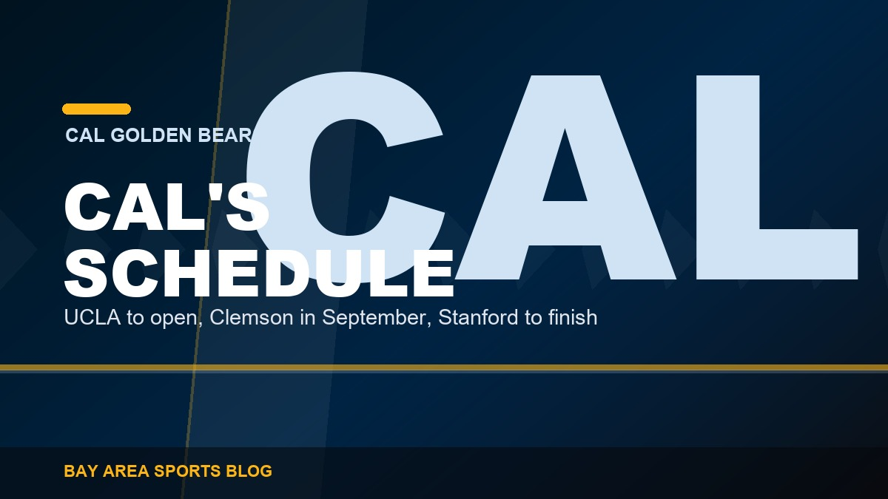
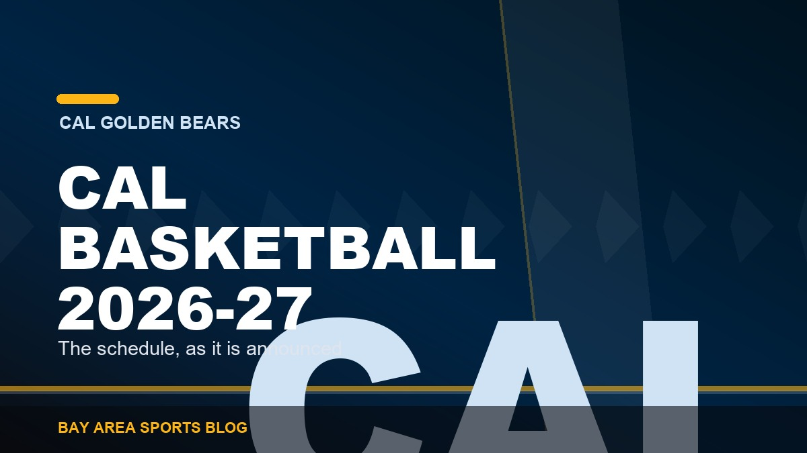

Cal Golden Bears
Cal football, basketball and everything else out of Berkeley, covered by people who live here. Right now that means the 2026 football season: Tosh Lupoi's first year as head coach, Jaron-Keawe Sagapolutele returning at quarterback after 3,454 yards, and an ACC schedule that opens against UCLA on 5 September and finishes with the Big Game at home on 21 November. Memorial Stadium sits in the hills, the rivalry with Stanford has been played since 1892, and both of those facts matter more than whatever the conference standings say.
Latest coverage

Tosh Lupoi Comes Home to Berkeley, and This Cal Team Might Actually Be Dangerous
A first-year head coach who played on this line, a quarterback who threw for 3,454 yards and came back anyway, and a schedule that misses the ACC's three biggest names.

Cal's 2026 Schedule, Game by Game, and the Four Weeks That Decide the Season
UCLA to open, Clemson at home in September, a November road stretch that will either make this team or expose it, and the Big Game to finish.

Cal and Stanford Play in the ACC Now, and Nobody Around Here Has Made Peace With It
Two Bay Area schools in a conference built around the Atlantic coast. The travel is absurd, the kickoff times are worse.

The Cal Basketball Schedule for 2026-27, and Everything Announced So Far
USC and Vanderbilt at Haas, Stanford home and away, and a road trip through Duke and North Carolina. The dates get filled in as the ACC releases them.
Start here
These do not go stale. If you only read three things in this section, read these.